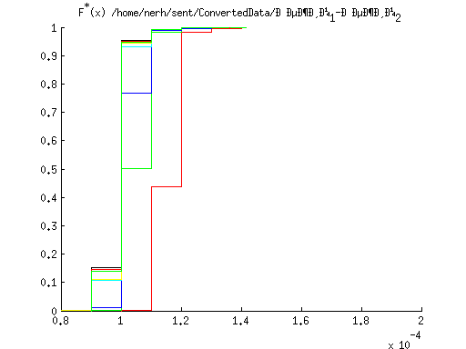
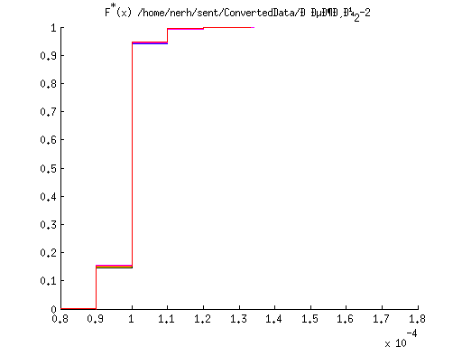

Построение графиков распределения времени между передними фронтами волны
Contents
отметчика
mainPath = '/home/nerh/sent/ConvertedData/';
subPaths = dir(mainPath);
speedPattern = 'Speed_[0-9]*\.mat$';
colors = ['r', 'g', 'b', 'c', 'y', 'k', 'm'];
markerChannel = 3;
tdcChannel = 4;
valuatedDistrib = [];
saveToFileFlag = 1;
info = [];
Обработка всех данных с отметчика
for i = 1:size(subPaths,1)
if subPaths(i).isdir && ~strcmp(subPaths(i).name,'.') && ~strcmp(subPaths(i).name,'..')
fullSubPath = [mainPath,subPaths(i).name];
files = dir(fullSubPath);
localDistrib = [];
localTDCDistrib = [];
separatedDistribs = [];
separatedTDCDistribs = [];
separatedValuatedDistribs = [];
Обработка всех файлов в текущем каталоге
for speedFile = 1:size(files,1)
if ~isempty(regexp(files(speedFile).name,speedPattern, 'once'))
load([fullSubPath,'/',files(speedFile).name]);
[markerTime markerVal] = restoreMarker(loadedFile.data(:,markerChannel)',2);
[tdcTime tdcVal] = restoreMarker(loadedFile.data(:,tdcChannel)',2);
leTime = diff(markerTime(markerVal>mean(markerVal)))./loadedFile.frequency;
tdcLeTime = diff(tdcTime(tdcVal>0)/loadedFile.frequency);
localDistrib = [localDistrib leTime];
distr.time = leTime;
separatedDistribs = [separatedDistribs distr];
localTDCDistrib = [localTDCDistrib tdcLeTime];
distr.time = tdcLeTime;
separatedTDCDistribs = [separatedTDCDistribs distr];
valuatedLeTime = getValuatedDuration(markerTime(markerVal>mean(markerVal)), tdcTime(tdcVal>0));
valuatedDistrib = [valuatedDistrib valuatedLeTime];
distr.time = valuatedLeTime;
separatedValuatedDistribs = [separatedValuatedDistribs distr];
if saveToFileFlag == 1
stat.name = [fullSubPath,'/',files(speedFile).name];
stat.restoredMarkerTime = markerTime;
stat.restoredMarkerVal = markerVal;
stat.restoredTDCTime = tdcTime;
stat.restoredTDCVal = tdcVal;
info = [info stat];
end
end
end
Вывод графиков, характеризующих распределение времени для
текущего режима
figure
hold on
colorIndex = 0;
for d=1:length(separatedDistribs)
[f,x] = ecdf(separatedDistribs(d).time);
stairs(x,f,colors(1+mod(colorIndex,length(colors))));
colorIndex = colorIndex + 1;
end
title(['F^*(x) ',fullSubPath])
hold off
figure
hold on
colorIndex = 0;
for d=1:length(separatedValuatedDistribs)
[f,x] = ecdf(separatedValuatedDistribs(d).time);
stairs(x,f,colors(1+mod(colorIndex,length(colors))));
colorIndex = colorIndex + 1;
end
title(['F^*(x_v) ',fullSubPath])
hold off
figure
hold on
[f,x] = ecdf(localDistrib);
ecdfhist(f,x)
title(['f^*(x) ',fullSubPath])
hold off
figure
hold on
colorIndex = 0;
for d=1:length(separatedTDCDistribs)
[f,x] = ecdf(separatedTDCDistribs(d).time);
stairs(x,f,colors(1+mod(colorIndex,length(colors))));
colorIndex = colorIndex + 1;
end
title(['F^*(tdc) ',fullSubPath])
hold off
figure
hold on
[f,x] = ecdf(localTDCDistrib);
ecdfhist(f,x)
title(['f^*(tdc_{\Sigma}) ',fullSubPath])
hold off




end
end
if saveToFileFlag == 1
save('speedParams','info');
end
save('valuatedDistrib','valuatedDistrib');
Вывод гистограммы для нормированных данных, собранных для всех режимов
figure
hold on
[f,x] = ecdf(valuatedDistrib);
ecdfhist(f,x)
normx = min(valuatedDistrib):((max(valuatedDistrib)-min(valuatedDistrib))/100):max(valuatedDistrib);
plot(normx,normpdf(normx,mean(valuatedDistrib),sqrt(var(valuatedDistrib))),'r')
title('f^*(x_{\Sigma v})')
hold off
sprintf('Mean: %e',mean(valuatedDistrib))
sprintf('Variance: %e',var(valuatedDistrib))
ans =
Mean: 6.944448e-04
ans =
Variance: 1.430661e-09